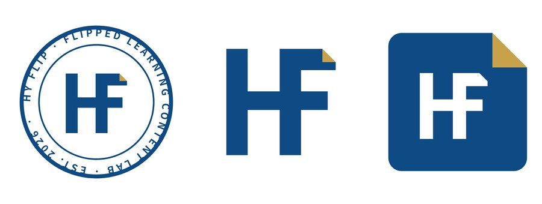
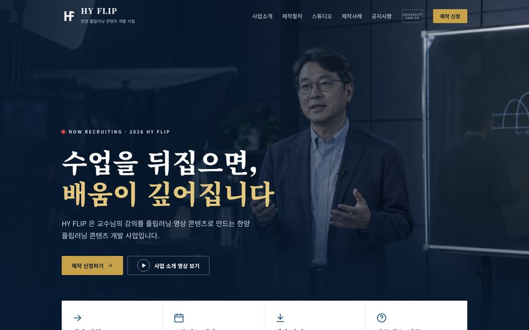
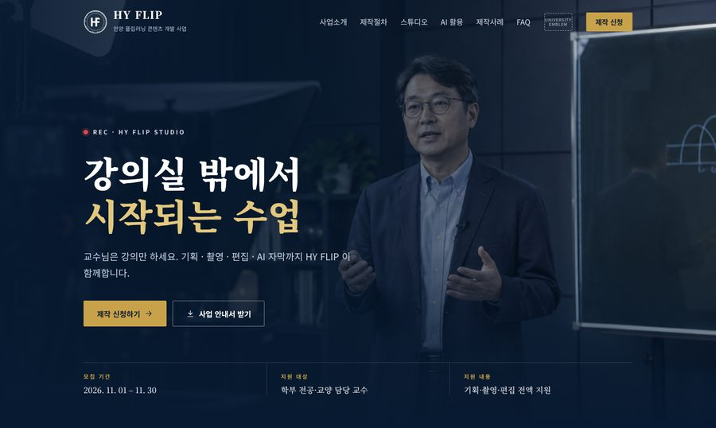
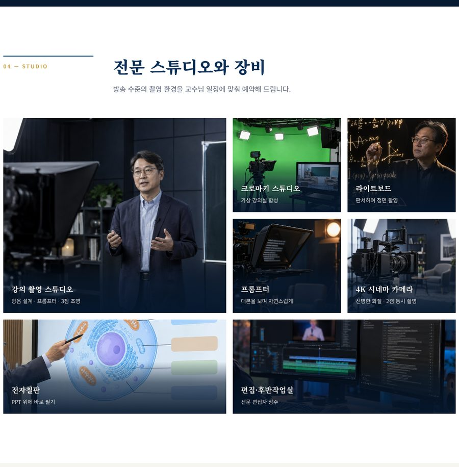
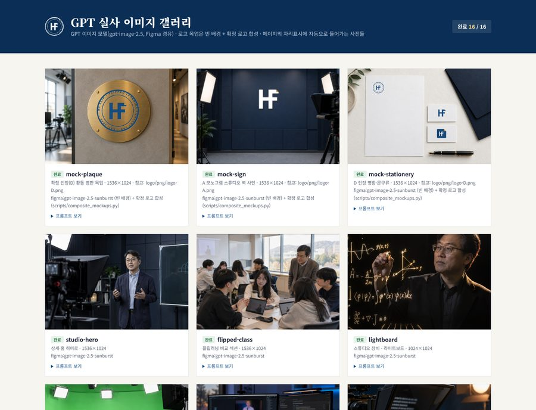

Edu-Tech AI Lab 에듀테크혁신팀 AI 학습조직
2차 목표(업무혁신) + 1차 목표(업무효율화) 결합 과제
HY FLIP — AI 기반 플립러닝 홍보·신청 플랫폼 구축
홍보 홈페이지(신규 플랫폼 UI/UX) + 제작 신청·스튜디오 예약 승인·홍보물 제작 업무 자동화
과제명 HY FLIP 플립러닝 콘텐츠 개발 사업 홍보 홈페이지 구축 및 신청·스튜디오 예약 업무 자동화 학습조직 HY FLIP Lab (플립러닝 콘텐츠 개발 파트) 구성 (2~3인) 책임 조진익 · 팀원 조용목 목표 구분 2차 업무혁신 신규 플랫폼 UI/UX 개발 1차 업무효율화 반복 업무 자동화산출물 유형 공지 예시 ① AI기반 콘텐츠 · ② 대시보드 · ③ 업무용 자동화 프로그램 + 웹 플랫폼 프로토타입 추진 기간 2026. 10. 15(과제 제출) ~ 12월 중순(성과 공유) 현재 진행 사전 프로토타입 완성 (로고·상세·홈·예약 화면·AI 실사 16장, 3쪽 부록)
1 추진 배경 및 필요성
【현황】 플립러닝 콘텐츠 개발 사업의 교수 대상 홍보·모집이 공문·이메일·개별 안내 중심으로 이뤄져, 사업 내용과 제작 절차를 한곳에서 확인할 창구가 없음【문제점】 제작 신청 접수 → 엑셀 정리 → 확인 회신이 담당자 수작업으로 반복 되고, 셀프 스튜디오는 공유 구글 캘린더에 교수가 직접 입력 해 승인 단계 없이 취소·변경이 잦음【기회】 생성형 AI로 기획·디자인·코딩·실사 이미지 제작까지 내부에서 직접 수행 가능 — 이미 HY FLIP 시안 일체를 AI로 2일 만에 제작해 실행 가능성을 확인함【제안】 홍보 홈페이지를 "보여주는 사이트"가 아닌 "업무가 자동으로 흐르는 창구" 로 구축하여, 교수 경험 개선(2차)과 담당자 업무 효율화(1차)를 동시에 달성
2 현재 업무(As-Is) → AI 적용 개선 방안 → 목표 상태(To-Be)
업무 As-Is (현재) AI 적용 개선 방안 To-Be (목표)
사업 홍보 공문·메일 개별 발송, 교수별 반복 설명 Claude 기반 기획·카피·코딩으로 홍보 홈페이지 구축 사업소개·절차·스튜디오·사례·FAQ를 한 주소 에서 상시 안내 제작 신청 접수 한글·메일 신청서 수신 → 엑셀 수기 입력 웹 신청 폼 → 시트 자동 기록 ·중복/누락 자동 검사 입력 즉시 DB화, 수기 입력 0건 스튜디오 예약·일정 공유 구글 캘린더 직접 입력 , 승인 단계 없음, 취소 잦음, "3일 전 변경 불가" 수기 관리 예약 화면 + AI 사전 검토 → 규칙 충족 시 자동 승인 , 예외만 담당자 캘린더 자동 등록, 확정·D-3·D-1 안내 자동 발송 홍보 콘텐츠 제작 로고·배너·사진을 외주 또는 수작업 제작 문답형 메타 프롬프트 + GPT 이미지 생성 파이프라인 시안 세트를 며칠 → 이틀 이내 내부 제작 현황 관리·보고 신청·제작 현황을 보고 때마다 수작업 집계 시트 데이터 기반 대시보드 자동 갱신 실시간 현황판, 보고 자료 자동 생성
※ As-Is 소요시간·오류 건수는 10월 중 실제 업무를 기록해 기준값으로 확정하고, 12월 성과 검증에 사용함 (2쪽 ⑤ 참조)
핵심 차별점 ① 아이디어가 아닌 작동하는 프로토타입을 이미 보유 (부록) ② 공지의 산출물 예시 ①·②·③을 하나의 플랫폼 으로 연결 ③ 타 파트·타 사업에도 재사용 가능한 홍보·신청 자동화 틀
+ 기대 효과
교수님 — 접근성 사업 내용·절차·준비물·사례를 한 곳에서 확인하고, 언제든 온라인으로 바로 신청
담당자 — 업무 효율 접수·안내·집계의 반복 수작업을 자동화해 상담·기획 등 핵심 업무에 집중
조직 — 확산 홍보·신청 자동화 틀과 AI 비주얼 제작법을 타 사업·타 파트에 재사용
HY FLIP — AI 업무자동화 프로그램 구성 및 추진 계획 2차 업무혁신 + 1차 업무효율화
3 AI 업무자동화 프로그램 구성 (5개 모듈)
No 프로그램 주요 기능 활용 AI·도구 구분 상태
M1 HY FLIP 홍보 홈페이지 신규 플랫폼 UI/UX 메인·사업 상세·제작 절차·스튜디오·사례·공지·FAQ, 데스크톱/모바일 대응, 로고 3단 체계 Claude(기획·코딩·디자인) 2차 프로토타입 M2 AI 비주얼 생성 파이프라인 문답 → 메타 프롬프트 → GPT 실사 이미지 일괄 생성 → 로고 정확 합성 → 갤러리·화면 자동 갱신 GPT 이미지 모델, Python 스크립트 1차 구현 완료 M3 제작 신청·스튜디오 예약 자동화 별첨 개선방안 웹 신청·예약 → AI 사전 검토(대상 과목·3일 규칙·중복·강의안) → 규칙 충족 시 자동 승인 , 예외만 담당자 → 구글 캘린더 자동 등록 → 확정·D-3·D-1 안내 Apps Script·구글 시트·캘린더, Claude 1차 화면 완성 M4 AI 후반작업 연계 공지 예시 ① 콘텐츠 제작 강의 영상의 AI 자막·요약·퀴즈 생성 → 홈페이지 '제작 사례'에 자동 게시 음성 인식(Whisper 등), Claude 2차 11월 M5 제작 현황 대시보드 공지 예시 ② 대시보드 신청·촬영·편집·탑재 단계별 현황, 학기별 실적 자동 집계·시각화 시트 + 대시보드 도구 2차 11~12월
※ 업무 흐름: 교수 방문(M1) → 신청(M3) → 촬영·제작 → AI 후반작업(M4) → 사례 게시(M1) → 현황 집계(M5) — 홍보물은 M2로 상시 제작
4 추진 일정 (공지 STEP 1~3 기준, 주 1회 실무 워크숍)
추진 내용 10월 3주 10월 4주 11월 1~2주 11월 3~4주 12월 1주 12월 2~3주
STEP 1 과제 선정·계획 수립·제출As-Is 업무시간·오류 실측 (기준값) STEP 2 M1 홈페이지 실데이터 반영·고도화M3 신청·스튜디오 예약 자동화 개발·테스트 M4 AI 후반작업 연계 / M5 대시보드 시범 운영·To-Be 정량 측정 (Agile 반복) STEP 3 성과 검증·팀 내 공유·확산
워크숍 주제(예): 프롬프트 설계 · AI 코딩으로 화면 수정 · 폼/시트 자동화 · 이미지 생성과 저작권·표기 · 대시보드 · 성과 측정법
5 정량 성과지표 (12월 중순 데이터로 검증)
지표 측정 방법 As-Is (기준값) To-Be 목표 (잠정)
신청 1건 처리 시간 접수→입력→확인 안내 담당자 작업 기록 (10월·12월 비교) 10월 실측 80% 이상 단축 안내 메일 누락·오기재 발송 기록과 신청 DB 대조 10월 실측 0건 홍보 시각물 1세트 제작 기간 로고·페이지 시안·실사 이미지 착수~확정 일수 기존 방식 확인 2일 이내 (시안 실적 2일) 스튜디오 예약 취소·변경률 이중 예약 포함 캘린더·예약 기록 집계 (학기 비교) 10월 실측 절반 이하 · 이중 예약 0건온라인 신청 비율 신청 채널별 집계 10월 실측 100% (웹 단일 창구)
6 · 지원 요청
AI 사용료 : Claude(기획·코딩·디자인), 이미지 생성(GPT 이미지 모델) 크레딧부서운영비 : 주 1회 워크숍 다과비금액은 공지 기준(AI 토큰비·다과비)에 따라 추후 협의 7 · 개인정보·보안
신청서 수집 항목 최소화(성명·소속·연락처·과목), 교내 승인 저장소·계정만 사용 생성형 AI에 개인정보·미공개 자료 입력 금지 교표·공식 로고는 승인 후 사용, AI 생성 이미지는 출처 표기
[부록] 사전 프로토타입 — AI로 이미 만든 산출물 2026. 10. 7 ~ 10. 8 · 제안용 시안
A AI 활용 제작 과정 (실제 수행)
문답·조사 → 프롬프트 4종 → 로고 6시안 → 상세 3시안 → 홈 3시안 → GPT 실사 16장 → 예약·승인 화면 → 허브
2일 기획~완성 소요
12종 로고·페이지 시안
16장 AI 실사 이미지
0원 외주 비용 (AI 사용료 별도)
B 주요 화면

로고 3단 체계 — D 인장(공문·명판) · A 모노그램(웹·영상) · E 타일(SNS)
홈페이지 — 영상 히어로 + 바로가기 + 공지·일정 카드
사업 상세페이지 — 교수 대상 안내, 제작 신청 유도
스튜디오·장비 소개 — GPT 이미지 모델로 만든 실사 사진
AI 이미지 갤러리 — 프롬프트·생성 출처를 함께 관리 (M2)스튜디오 예약 (M3) — AI 사전 검토 → 규칙 충족 시 자동 확정 (별첨)
산출물 위치 GitHub chojinapd/jojinick › design/hanyang-flip/ — index.html(허브) · home/home-final.html · detail/detail-final.html · booking/booking.html·admin.html(예약) · assets/gallery.html · prompts/(메타 프롬프트)※ 본 시안은 제안용으로, 한양대학교 공식 교표·로고는 사용하지 않았으며(자리표시), 페이지의 수치·후기·연락처는 예시임. 학습조직 기간 중 실제 데이터로 교체·고도화 예정